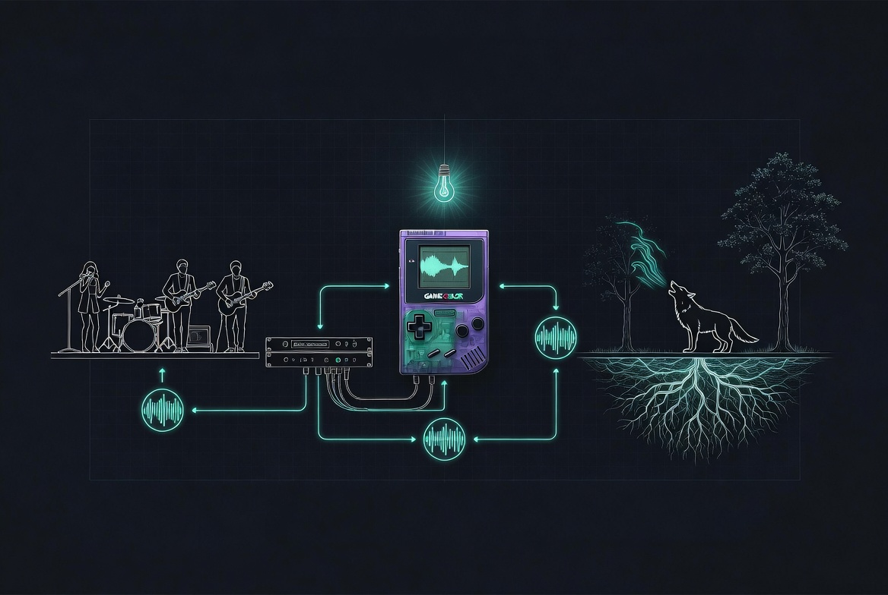
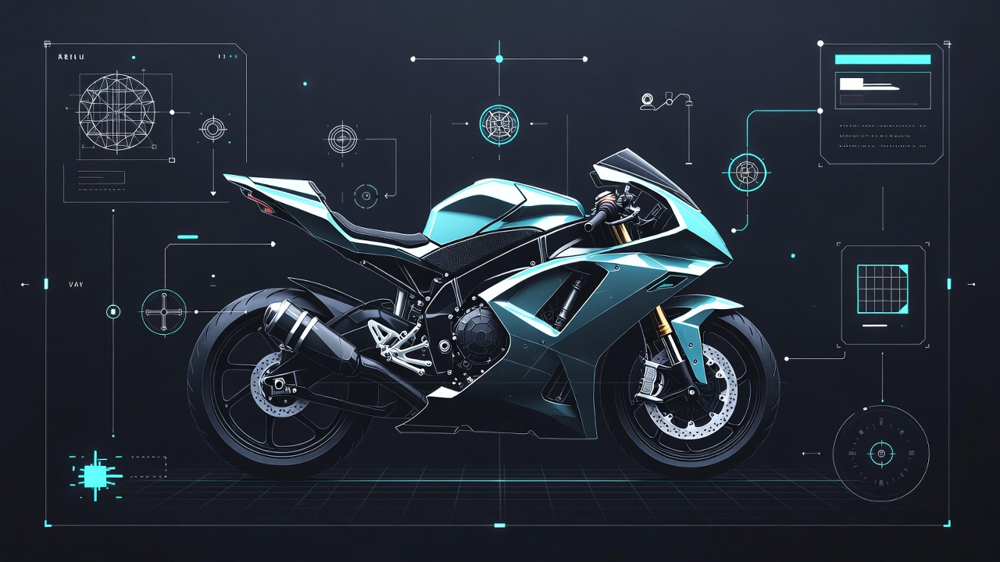
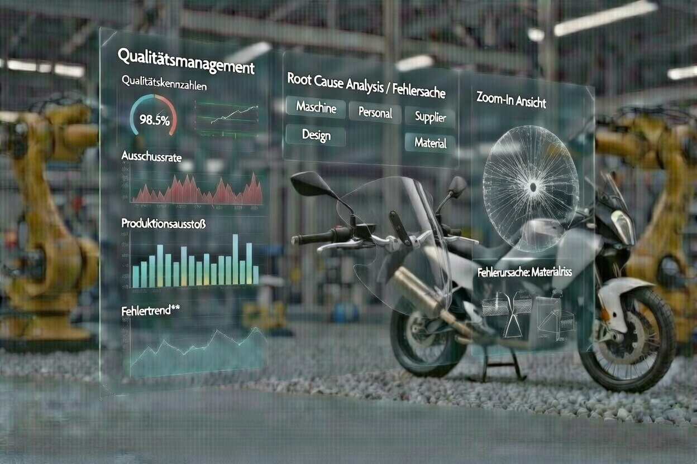
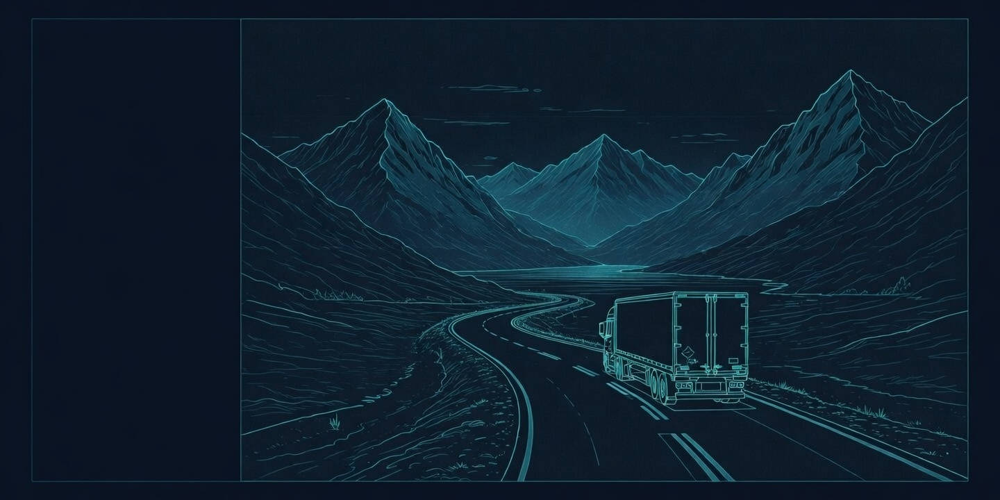
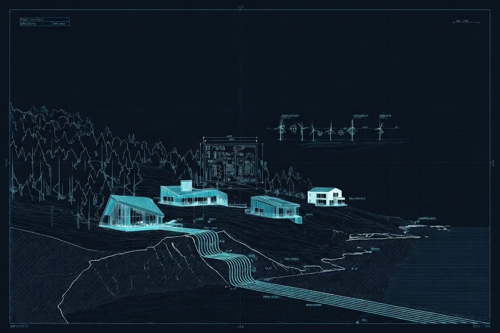
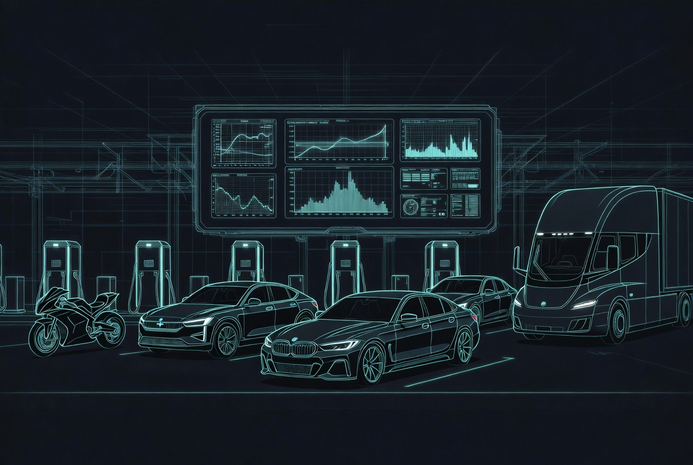
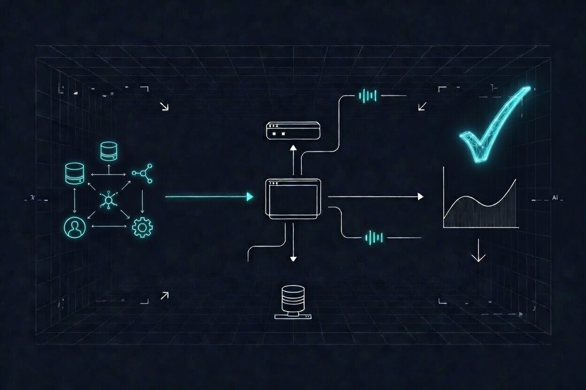
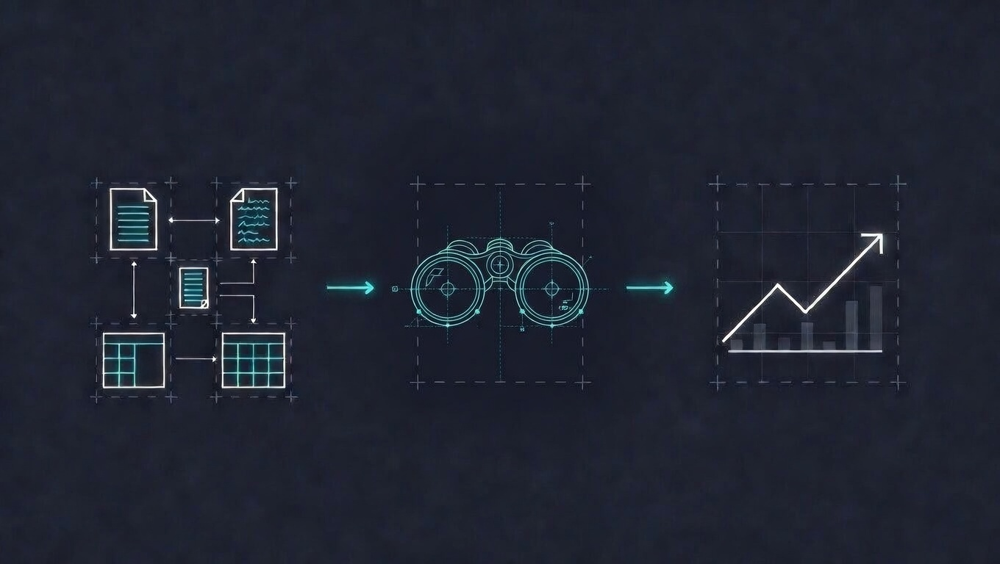
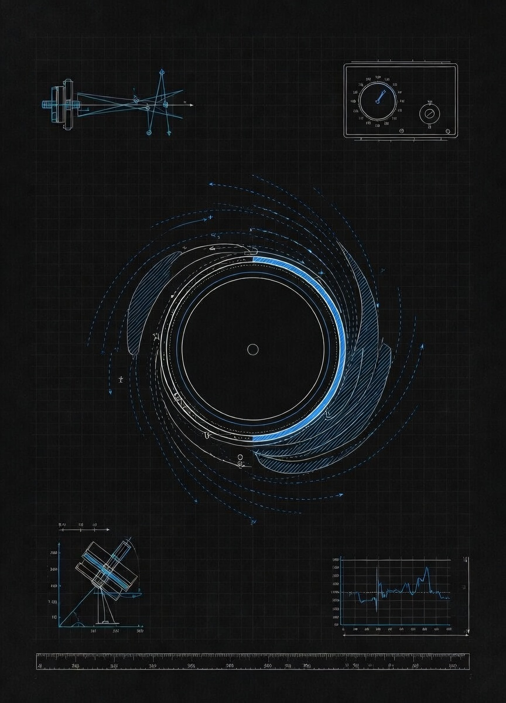

Ein einsatzbereites F&E-Labor mit ehemaligen Volvo-, Mercedes- & ZF-Ingenieur:innen. Wir bauen, testen, analysieren und verbessern — mit der Geschwindigkeit moderner Technologie.
Sprich mit uns über deine HerausforderungenWir bauen komplette Lösungen — & schärfen dein Team für das, was als Nächstes kommt.
Unser Team besteht aus ehemaligen Volvo-, ZF- und Mercedes-Ingenieur:innen mit über 15 Jahren Erfahrung in Robotik, Mechatronik und Data Analytics. Diese Tiefe ermöglicht Lösungen weit über den Punkt hinaus, an dem allgemeine KI-Werkzeuge an ihre Grenzen stoßen.
Unsere Systeme sind lokal und transparent. Mit LegalTech-Expertise und dem Datenschutzniveau deutscher Forschungslabore realisieren wir vollständig isolierte oder kontrollierte Hybrid-Architekturen — DSGVO-konform und darüber hinaus. Ihre Daten verlassen nie Ihr Netzwerk.
Wir arbeiten projektbasiert und unterstützen Unternehmen dort, wo Zuverlässigkeit, Nachvollziehbarkeit und Datenschutz entscheidend sind. BXT verbindet domänenspezifisches Wissen mit harter Ingenieurskunst.
Konkrete Lösungen für konkrete Probleme

Von Musikvenues bis zur biologischen Akustik — neue Wege, wie Menschen Musik erleben, wahrnehmen und mit ihr interagieren, sowie breitere Anwendungen in biologischer Kommunikation und Klanganalyse.

Designabsicht beschreiben, Geometrie-Features erzeugen. Weniger Menüs, weniger Lernkurve — mehr Zeit für Engineering.

Schraubdaten, Materialchargen, Prüfstandsergebnisse — KI verknüpft fragmentierte Datenquellen und führt Ihre QM-Experten schneller zur Fehlerursache.

Reklamationen, Fehlteile, Lagerbestände — KI-gestützte Optimierung vom Wareneingang bis zur Rückverfolgung fehlerhafter Komponenten.

Erzeugung, Speicherung, Verteilung — KI-basierte Optimierung urbaner Energienetze für Stadtwerke und Kommunen auf dem Weg zu 100% Erneuerbar.

Standortplanung, Lastverteilung, Demand Forecasting — für Betreiber von Ladenetzwerken, die jede Kilowattstunde intelligent routen wollen.

Ihre Fachkräfte gehören an komplexe Probleme — nicht an Ticket-Queues. KI-Agenten übernehmen Routinefälle autonom und senken operative Kosten messbar.

Spezialisierte Erkennung und Verarbeitung technischer Unterlagen — von handschriftlichen Anmerkungen bis zu komplexen Tabellenstrukturen.

Implementierung für technisch anspruchsvolle Randbedingungen, bei denen Standardansätze versagen. Dort, wo es schwierig wird, fangen wir an.
Was wir anbieten
Maßgeschneiderte Toolkits & Technologien, die Wissenschaftler:innen, Ingenieur:innen, Kreativen & Innovator:innen helfen, neue Durchbrüche zu erzielen und zu erfinden.
Intelligenter Assistent für Hands-on-Macher:innen, die Dinge erledigen wollen. Klicken Sie auf die Chat-Blase unten rechts, um einen kostenlosen Vorgeschmack auf das zu bekommen, was wir gemeinsam bauen können.